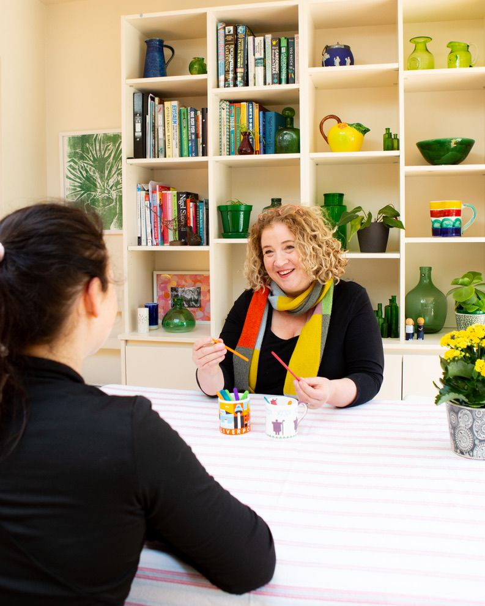

Priscilla
Bacon
- PSYCHOTHERAPY
- PARENTING
- SCHOOLS
I’m Priscilla, based in West London where I love helping children live emotionally healthy lives within families where there is a lot of fun and as little stress as possible!
More about me...My Services

Psychotherapy
I work as a psychotherapist with children and young people so they can live happy and healthy lives.
Learn more.Schools
Helping teachers understand why children misbehave and how to create a calm and happy classroom.
Learn more.Parenting
Tailor made support and training helping parents to create a family life they want; full of fun and laughter and without stress!
Learn more.School Testimonials
Priscilla gave a number of parenting workshops, weekly drop in sessions for parents, and staff training - all of which had great impact, promoted discussion, fostered awareness and caused attitude change. She is insightful, empathetic and informative whether it be to groups of parents, staff, children or one to one. She has an overwhelmingly positive and calm persona and a rich knowledge which she draws on consistently, to aid the journey(s) of those she works with. She is a highly valuable asset - every school should have a Priscilla!
— Jem Peck, Former Headteacher at Kew Green Prep“The training Priscilla provided was absolutely fantastic. The sessions were full of helpful practical advice, presented incredibly well, and were both engaging and informative. We are so grateful for the generous time given to training our volunteers, and we know that the strategies and tips shared will make a real difference not just for the families we currently support, but for future families as well. The sessions covered a wide range of parenting topics and provided our volunteers with valuable tools to help them in their work. Thank you for this invaluable training!”
— Nicky & Vicky, Home-Start EalingPriscilla supported staff and parents at our school through the Wellbeing Service that she built for our community. An important part of the service was helping parents to help their children with their learning experience: emotionally and behaviourally. She also provided systems for outside school behaviour and building strong relationships. The talks Priscilla held at school enabled parents to access support when they needed it most such as; bereavement, family break-ups, sibling squabbles and a lack of self-esteem and confidence. Priscilla supervised a team of therapists who worked 1:1 with our children and she worked with and trained our staff helping them to understand the emotional needs of the children and building healthy classroom behaviour strategies. Our school were introduced to ‘Watch and Wonder’ empathy and emotional literacy intervention by Priscilla, supporting all the children in our school. Priscilla was a valued member of our team and we miss having her here!
— Phil Bourne, Headteacher at O.L.O.G“Priscilla Bacon has delivered a series of exceptional parenting workshops at Bute House. Her insightful presentations have provided parents with a valuable understanding of the brain science underlying children’s behaviours. Beyond the theoretical framework, Priscilla offers practical tips and strategies that parents can immediately implement to improve interactions with their children. These workshops have fostered a calmer and more positive environment at home, leading to significant improvements in parent-child relationships. Throughout the sessions, Priscilla demonstrates empathy and understanding for the challenges of parenting, creating a supportive and encouraging atmosphere for all participants.”
Giles Puckle, Senior Deputy Head at Bute HouseParent Testimonials
‘Priscilla helps me understand how to approach the most difficult issues and gives me the tools I need to navigate them. Her support for us all has been life changing for our family’.
D, from Kew‘Priscilla has helped us navigate some really tough times for our boy. Thanks to her expertise, her help and unwavering support we are now better equipped to face the challenges of parenting. Our family is calmer and happier. She was always there to offer support, always went the extra mile with advice and a helping hand.’
Mr & Mrs H, from Brent‘We found Priscilla from the outset to be completely in tune with our challenges and provided a path for us to navigate over the weeks and months which was super supportive. We learnt to really understand and empathise with our child’s feelings and has really improved our relationship with him and his sibling. Our home is so much calmer!’
TB, from Hampton‘Priscilla helped us understand the impact that a separation can have on a young child and how we, as parents, can both discuss this with our child so we remain consistently firm but kind and open. It was an invaluable time spent with Priscilla that has supported all of us in our new lives.’
Ms B, from Fulham‘We have loved working with Priscilla. Initially we saw her for Parent Coaching - we learned so much, became so much more aware and she gave us some amazing tips which we put into practice at home and saw really positive change for all the family. Priscilla is now seeing our son who is growing so much in confidence and loves his sessions. She has been fantastic throughout and a huge support to us all!’
Mr & Mrs P, from Fulham